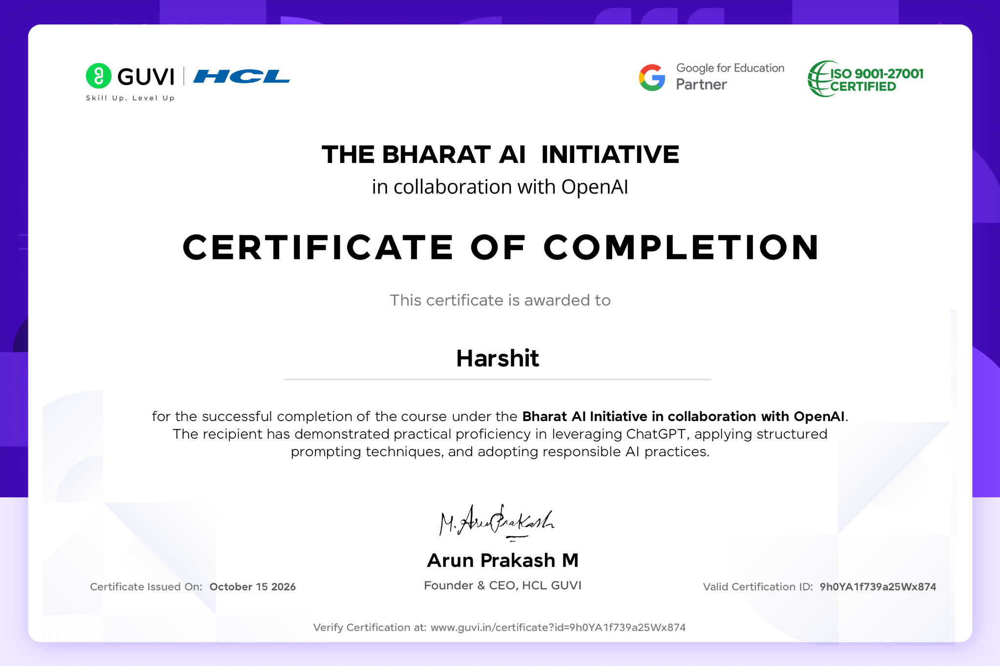
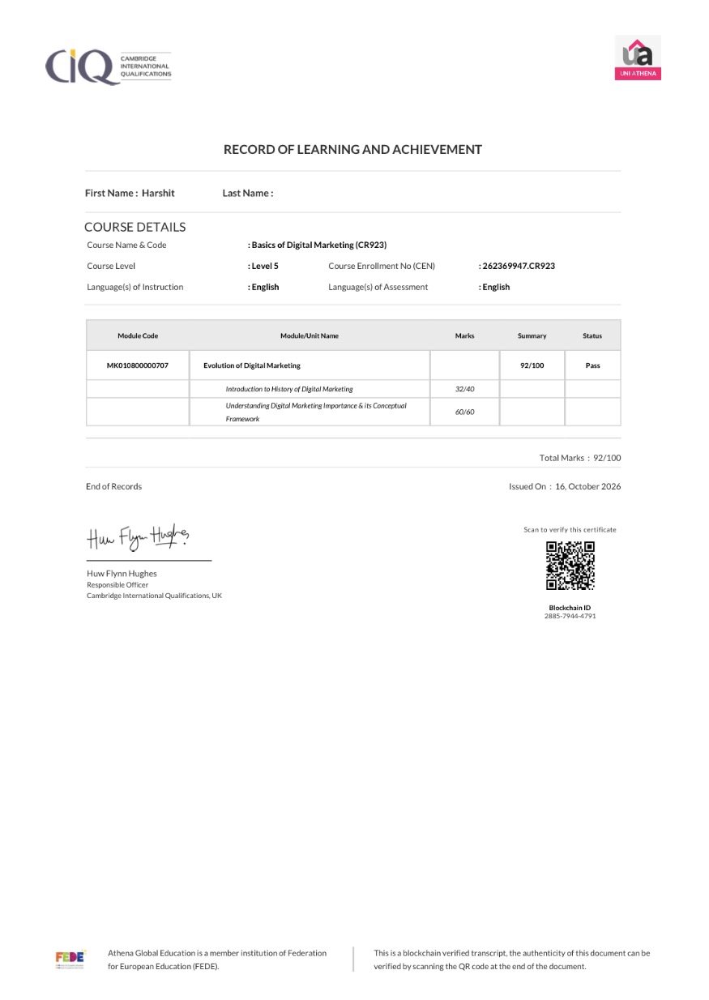

01 / WEB APP✦
EVENT
TWIN✳
TWIN✳
EventTwin
A project focused on making event discovery and planning feel more connected and convenient.
View GitHub profile ↗HELLO, WORLD! I'M
I turn ideas into useful digital experiences. I'm a Computer Science student who loves building, learning, and solving problems with technology.
A LITTLE ABOUT ME
I'm Harshit, a Computer Science student working toward becoming a versatile software developer.
I enjoy exploring how things work, strengthening my programming fundamentals, and turning what I learn into practical projects. From web experiences to ideas that solve everyday problems, I believe every project is a chance to get better.
I'm always open to learning from other developers, collaborating on meaningful ideas, and taking on new challenges.
Explore my GitHub ↗Building skills one project at a time.
Breaking big challenges into small steps.
Growing through feedback and collaboration.
MY TOOLKIT
A growing toolkit for turning concepts into working solutions.
Core languages & logic
Interfaces & experiences
Building blocks & workflow
What I'm exploring
Skills are a work in progress—I'm continuously practicing and expanding this toolkit.
SELECTED WORK
A few projects from my learning and building journey.
A project focused on making event discovery and planning feel more connected and convenient.
View GitHub profile ↗A health-focused concept designed to make useful wellness information easier to access.
View GitHub profile ↗A study-planning concept to help learners navigate goals, resources, and their next steps.
View GitHub profile ↗A fitness-oriented website concept for presenting training services and helping people get started.
View GitHub profile ↗A document-tracking concept designed to keep files and their progress organized.
View GitHub profile ↗Project summaries are starter descriptions based on the names provided. Replace them with the exact features and repository links before publishing.
PROOF OF LEARNING
Courses and learning milestones that are part of my technology journey.

View full certificate ↗Certificate of Completion · GUVI / HCL
View certificate ↗
View full record ↗Level 5 · Cambridge International Qualifications / Uni Athena
View learning record ↗THE ROAD SO FAR
Abdul Kalam Technical University
Building a foundation in computing, programming, and software development.Ghaziabad, Uttar Pradesh
Learning through practical tasks and developing technical skills.Learning • Building • Improving
Looking forward to contributing to real-world projects and growing with a team.Keep growing. This portfolio is a snapshot of my journey—not the finish line.
HAVE A PROJECT IN MIND?
Open to internship opportunities, collaborations, and conversations about technology.
Say hello ↗